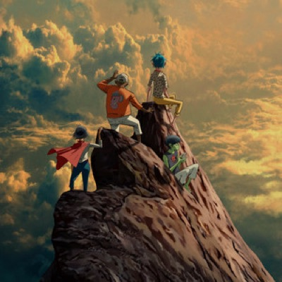
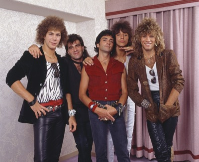
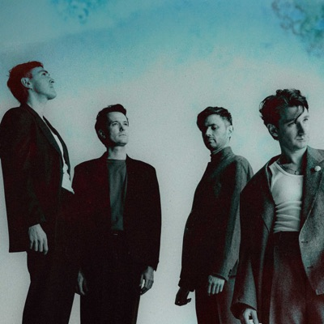
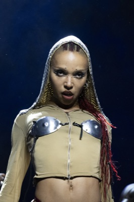
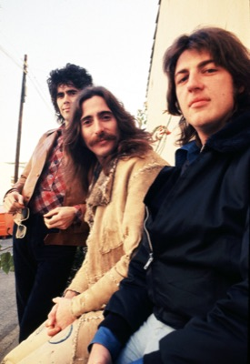
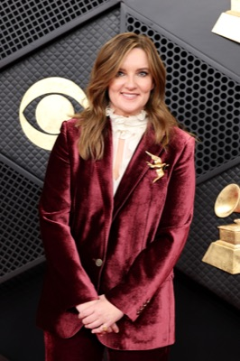

Gorillaz
Gorillaz are a virtual band created by Damon Albarn and Jamie Hewlett, with Albarn in charge of the music and Hewlett the visuals. Albarn is the frontman for the British rock group Blur; Hewlett draws comic books and is most famous for Tank Girl, which in 1995 was made into a movie starring rapper Ice-T and Stooges frontman Iggy Pop. Hewlett says it's best to watch the film with the volume muted.

Bon Jovi
They did most of their damage on the charts in the '80s but have consistently released albums since. Thanks to their loyal fanbase, they had four #1 albums in the US well past their glory years: Lost Highway (2007), The Circle (2009), What About Now (2013), and This House Is Not for Sale (2016).

Glass Animals
Glass Animals, a genre-bending pop-rock band from Oxford, England, got their first taste of fame when their psychedelic love song “Gooey” took off around the globe in 2014. They followed their debut album, Zaba, with a run of sold-out shows on a concert tour that took them through Europe, Australia, Mexico, and the US. The cast of characters they met on the road influenced their subsequent album, How To Be A Human Being (2016), but it was the life story of frontman Dave Bayley that brought the band to greater heights with Dreamland (2020), featuring their smash single “Heat Waves.”

FKA Twigs
FKA Twigs was a dancer before she was a singer. She trained in a number of dance styles when she was young, and started getting freelance dance gigs when she was 13. She got work as a backup dancer in videos for the likes of Kylie Minogue, Ed Sheeran, Taio Cruz and Jessie J.

Three Dog Night
Three Dog Night might be the most successful cover band in history. In the late 1960s and early 1970s they had huge hits with smooth, clean remakes of other people's songs. Among them:
- “One” (originally by Nilsson)
- “Mama Told Me (Not to Come)” (originally by Eric Burdon & The Animals)
- “Eli's Coming” (originally by Laura Nyro)

Brandy Clark
Brandy Clark was raised in Morton, Washington, and went to community college in the area before moving to Nashville in 1998, where she studied music-business at Belmont University and honed her skills as a songwriter. Her first hit as a writer was “Mama's Broken Heart” by Miranda Lambert in 2011. Two years later, Clark released her debut album, 12 Stories.
Jon Batiste
Batiste shows up in a number of TV shows and movies playing himself, including the 2010 HBO series Treme and the 2026 movie The Devil Wears Prada 2, but he's also taken on some actual acting roles. He played an organist in Spike Lee's 2012 drama Red Hook Summer and jazz singer Shug Avery's (Taraji P. Henson) husband in the 2023 film version of The Color Purple. He also portrayed famed '60s session keyboardist Billy Preston in the 2024 movie Saturday Night, for which he also composed the score.
Suki Waterhouse
Waterhouse began dating actor Robert Pattinson after meeting at a celebrity game night in Los Angeles in 2018. The couple welcomed a baby girl in 2024; the experience inspired Waterhouse's Loveland (2026) single “Back In Love,” which is about the postpartum transformation of her relationship with Pattinson.